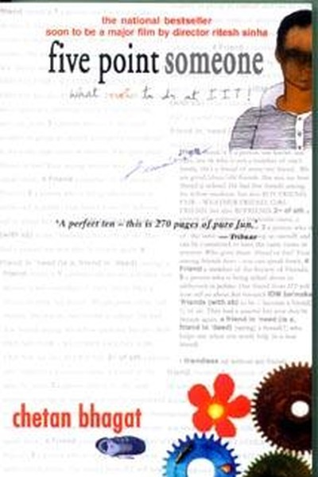

Library › Self-Improvement
Five Point Someone — Summary & Key Lessons

Grades measure compliance, not intelligence.
📖 OPEN THE FULL INTERACTIVE BREAKDOWN →🌐 Read it in Hindi, Hinglish, Gujarati, Tamil & 22 more languages — free, with audio.
💡 The Big Idea
Chetan Bhagat's debut — the book that launched a reading revolution in India — is a campus novel about three IIT Delhi students who barely scrape by with five-point-something GPAs while their batchmates chase tens. Through their struggles with impossible workloads, rigid professors and the pressure to define self-worth by grades, the book delivers a message that resonates far beyond college: the system rewards conformity, but life rewards those who keep their curiosity, humanity and courage. Success is not the grade on your transcript — it's the person you become while earning it.
🧠 The 6 Key Lessons
Lesson 1: The Grade Trap: Marks Measure Compliance, Not Intelligence
Part 1: The System
The three protagonists are smart — but they're 'five point someone' because they refuse to play the grade game with total devotion. Bhagat's critique: the system grades how well you follow it, not how well you think. The same trap exists beyond college: promotions measure conformity to office politics, salaries measure negotiation as much as skill, and 'success metrics' often reward the wrong behaviour. The lesson isn't to reject all metrics — it's to know which ones matter. The people who break out are those who treat the official scorecard as one input among many, not as the verdict on their worth.
📖 Example: Hari, Ryan and Alok are constantly outshone by toppers who memorize better — yet it's their curiosity, friendship and willingness to question that carry them through real crises the toppers never face. Read the full example →
⚡ Do this: Identify the 'grade' you're currently chasing (a metric, a title, an approval). Ask: does it measure capability or compliance? Adjust your effort accordingly.
Lesson 2: The Pressure Cooker: How Expectations Crush Potential
Part 2: The Pressure
The book's emotional core: the relentless pressure from parents, professors and peers to perform — pressure that turns bright students into anxious performers and, in the novel's darkest moment, into tragedy. Bhagat's message: expectations are a double-edged sword — they can lift you or crush you, and the line is crossed when your worth becomes conditional on a number. The lesson for anyone living under pressure: protect your sense of self from the scorecard. You are not your result. The person who can hold their identity steady under pressure performs better — and survives longer — than the one who stakes everything on the next number.
📖 Example: The novel's most sobering thread is the classmate whose entire identity is tied to academic performance — when it cracks, everything cracks. The three protagonists, precisely because they're 'failures' by the scorecard, keep their sanity. Read the full example →
⚡ Do this: Write your self-worth inventory: what are the top 3 things that make you valuable as a person, independent of any metric? Re-read it after your next setback.
Lesson 3: The Outsider's Edge: Being Different Is a Strategy
Part 3: The Rebellion
Ryan, the most rebellious of the three, constantly questions the system — and the novel shows that his 'disrespect' for convention is actually his greatest asset. He's the one who thinks sideways, takes risks, and eventually finds a path the conformists can't see. Bhagat's lesson: the outsider's perspective is a competitive advantage, not a handicap. The person who can see the system from outside it can exploit its blind spots. The challenge is converting rebellion into results — questioning everything, but channelling the questioning into building something better rather than just complaining.
📖 Example: Ryan's willingness to question the professor and challenge assignments makes him a troublemaker on campus — but the same trait later becomes the entrepreneurial instinct that the compliant toppers lack entirely. Read the full example →
⚡ Do this: List 3 rules or conventions in your field that everyone follows without questioning. Choose one — and design a small experiment that breaks it deliberately.
Lesson 4: Friendship as Infrastructure: You Can't Do It Alone
Part 4: The People
The novel's real subject is friendship: the three boys survive IIT not through brilliance but through each other — sharing notes, covering for each other, and carrying each other through breakdowns. Bhagat's lesson: your network is not a career tool; it's a survival system. The people who know your real self — not your resume — are the ones who save you when the system breaks you. In a hyper-competitive world, genuine friendship is not a distraction from success; it is the infrastructure success stands on. Invest in the few, not the many.
📖 Example: When one of the trio hits rock bottom, it's the others who pull him back — not the professors, not the grades, not the system. The friendship was the real safety net. Read the full example →
⚡ Do this: Identify your 3 'real' people — the ones who know your struggles. Schedule one genuine, non-transactional conversation with each this month.
Lesson 5: The Sunk-Cost Trap: Quitting Is Sometimes the Smartest Move
Part 5: The Decision
The novel's most controversial lesson: the characters consider walking away from IIT — and Bhagat suggests that leaving a path that's crushing you is not failure but strategy. The sunk-cost fallacy — 'I've invested so much, I can't quit now' — keeps people trapped in careers, degrees and relationships that are destroying them. Bhagat's counter: the years you've spent are gone either way; the question is only what the next years should be. The person who can walk away from sunk costs redirects their life; the person who can't surrenders the future to the past. Quit the wrong things fast; commit to the right things fully.
📖 Example: The characters' contemplation of quitting — and their eventual decision to finish differently rather than drop out — shows that the real freedom is having the option and the courage to choose, not being trapped by 'what people will say'. Read the full example →
⚡ Do this: Apply the 'if I were starting today' test to your biggest commitment: if you were choosing fresh, would you choose it again? If not, plan an exit or a renegotiation.
Lesson 6: Life Beyond the Transcript: The Real Report Card
Part 6: The Answer
The book's closing message: years later, what matters is not the GPA but the person — the relationships kept, the courage shown, the questions still asked. Bhagat's protagonists, with their mediocre grades, build lives worth living because they kept their humanity intact. The lesson: life's real report card has no aggregate — it's marked on courage, curiosity, kindness and the willingness to keep going. The score that matters is the one you give yourself for staying true to what you know is right. Success that costs you yourself was never success.
📖 Example: The novel ends with the characters, years on, looking back — the toppers' achievements fade into the background while the trio's friendship and hard-won wisdom remain the actual story. The transcript was never the point. Read the full example →
⚡ Do this: Write your own 'real report card': rate yourself 1-10 on courage, curiosity, kindness and honesty. Pick the lowest score and take one action to raise it this week.
✅ 5-Step Action Plan
- Identify the 'grade' you chase — measure capability, not compliance.
- Write your 3 metric-independent sources of self-worth.
- Break one convention deliberately this month.
- Deepen one genuine friendship with a real conversation.
- Apply the 'starting fresh' test to your biggest commitment.
💬 Best Quotes from Five Point Someone
- “Your GPA is a number. Your character is the answer.”
- “The system grades compliance; life grades courage.”
- “Quitting the wrong thing is the smartest move you'll ever make.”
Interactive version: mark lessons as read, listen in your language, share quote cards.